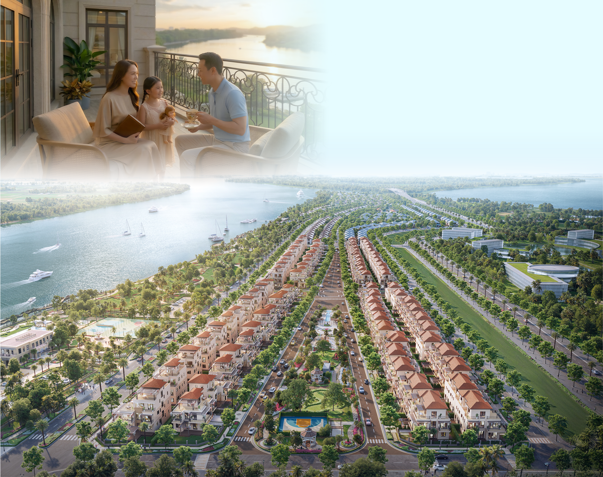
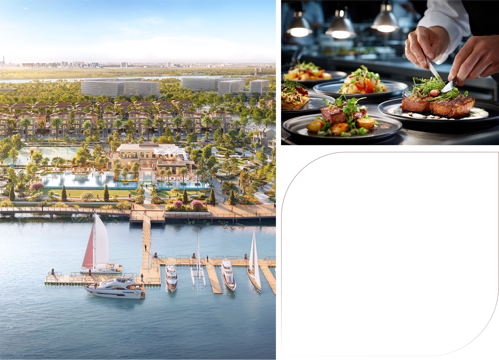
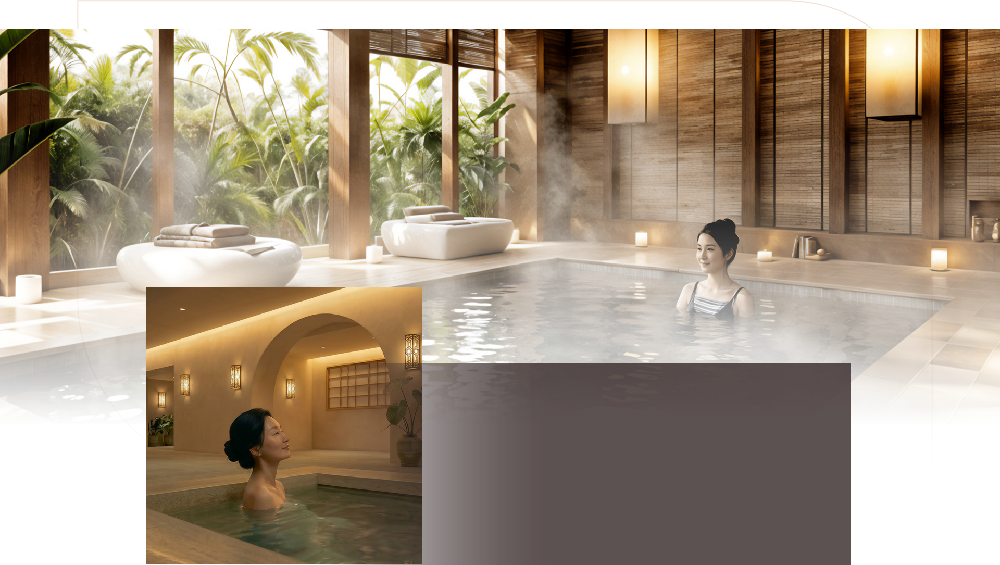
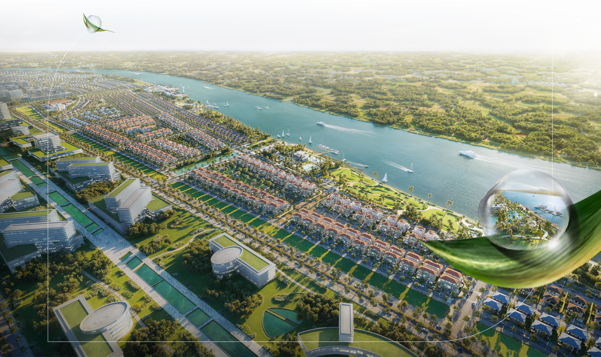
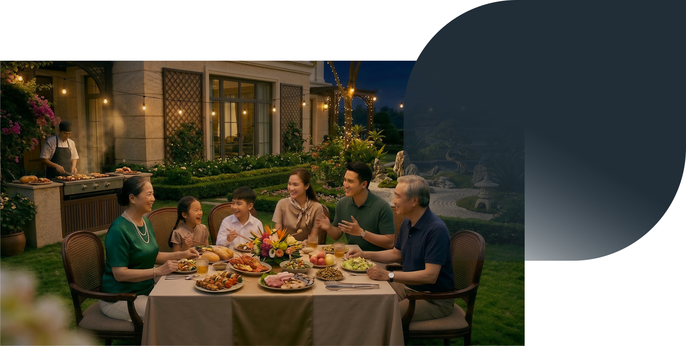

Con người thường dành nửa đời người để đuổi theo những mục tiêu xa tắp, để rồi đến độ chín của trải nghiệm, ta mới vỡ lẽ rằng: Đích đến xa xỉ nhất không nằm ở những danh vọng, mà là sự tĩnh lặng trong tâm hồn, điều phần lớn đến từ không gian sống.
Tại đảo tự nhiên Đại Phước, mỗi căn biệt thự Elyse Island không đơn thuần là một nơi trở về, đó là một “thánh đường” của sự an nhiên, nơi thời gian được hoàn trả nguyên vẹn cho chủ nhân, để từng thời khắc trôi qua là một kiệt tác của sự sống được khắc ghi giữa chốn thiên nhiên thuần khiết.
Bình minh
Nếu ngày mới nơi đô thị thường được bắt đầu trong guồng quay vội vã, thì tại Elyse Island, dự án tinh tuyển 45ha trên ốc đảo tự nhiên Đại Phước (Nhơn Trạch, Đồng Nai), ngày mới được đánh thức bằng một nghi thức lộng lẫy của ánh sáng và sự tĩnh lặng.
Hãy thử nhắm mắt lại và để các giác quan dẫn lối. Đó là khoảnh khắc dòng sông Đồng Nai, khẽ chuyển mình trút bỏ tấm màn sương đêm huyền ảo, để lộ ra bốn bề mặt nước đang chờ đợi được dát lên sắc vàng lấp lánh của những tia nắng đầu ngày. Bạn bước ra từ những vòm cong phóng khoáng mang đậm chất Địa Trung Hải của căn biệt thự, chân trần chạm vào nền đá mát lạnh, và ngay lập tức cảm nhận sự sống căng tràn.

Trước mắt bạn không còn là những bức tường bê tông, mà là đường bờ sông 1,5km trải dài, nơi mặt nước và bầu trời hòa làm một trong sắc màu xanh thẳm. Sự tĩnh lặng ở đây không phải là sự trống rỗng vô hồn, mà là một khoảng không đầy ắp sự tinh khiết. Đó là thứ âm thanh của sự sống nguyên sơ: tiếng gió luồn qua những tán cây như lời thì thầm của đất trời, tiếng sóng nước vỗ bờ như nhịp thở đều đặn của dòng chảy thời gian.
Trong khoảnh khắc ấy, những chiếc “áo giáp” của danh vọng, những chức danh chủ tịch hay doanh nhân lừng lẫy trên thương trường dường như trở nên chật chội và được nhẹ nhàng cởi bỏ lại phía sau. Bạn nhận ra mình đang đứng giữa một không gian không vô biên, nơi tâm trí được tự do vươn xa như tầm mắt. Ở đó, chỉ còn lại bạn, một con người nguyên bản, đang hít căng lồng ngực nguồn sinh khí nguyên sơ nhất, để cảm nhận trọn vẹn đặc ân của việc được sống, hiện hữu và hòa nhịp vào miền vô tận của thiên nhiên.
Buổi trưa
Khi mặt trời lên đến đỉnh điểm của sự rực rỡ, Elyse Island không hề chói chang mà dịu dàng chan hoà dưới những tán cây xanh mướt. Đây là thời khắc hoàn hảo để thực hành triết lý Otium mà người La Mã cổ đại hằng tôn sùng, một khoảng thời gian nhàn rỗi đầy trí tuệ, nơi con người tạm gác lại mọi lo toan (Negotium) để chăm sóc khu vườn tâm hồn.
Trong không gian mở của căn biệt thự ven sông, bữa trưa là một hành trình thưởng lãm tinh tế. Sự xa xỉ lúc này nằm ở dịch vụ “may đo” riêng: Một thực đơn được chuẩn bị bởi đầu bếp tại gia, một ly vang trắng ướp lạnh đúng độ, hay đơn giản là dư vị thanh tao của tách trà thượng hạng bên cạnh trang sách đang đọc dở. Thời gian dường như ngưng đọng, chỉ còn lại tiếng lật giấy sột soạt và tiếng ly pha lê chạm khẽ vào mặt bàn đá, những âm thanh trong trẻo dành riêng cho những người đủ từng trải để biết trân trọng những thời khắc an yên thực thụ.

Và khi tâm trí đã được vỗ về bởi sự tĩnh tại, nhu cầu kết nối với những tâm hồn đồng điệu lại khẽ khàng thức giấc. Chiếc xe điện nội khu êm ái lướt qua những thảm xanh mát rượi của công viên Botanic Park, đưa bạn đến Elyse Marina Club, tổ hợp tiện ích quy mô 8 ha thời thượng, nơi khởi đầu của những cuộc hội ngộ tinh hoa.
Tại sảnh Lounge sang trọng hướng thẳng ra bến du thuyền, những người hàng xóm đã đợi sẵn. Họ ngồi lại bên nhau để sẻ chia niềm đam mê về một niên vụ rượu vang quý hiếm, đàm đạo về nghệ thuật tranh ảnh hay cùng thưởng thức một ấm trà cổ thụ. Đó là sự kết nối thuần khiết của những người “cùng tần số”, nơi chân tình và sự thấu hiểu được vun đắp giữa một cộng đồng văn minh, kiến tạo nên giá trị di sản tinh thần quý giá hơn bất kỳ tài sản vật chất nào.
Hoàng hôn
Khi ráng chiều bắt đầu buông lớp voan mỏng màu hổ phách xuống mặt sông, không gian chuyển mình dịu dàng ôm lấy hòn đảo. Thế giới ồn ào ngoài kia lùi xa, nhường chỗ cho những cảm xúc riêng tư nhất. Cơ thể bạn, sau một ngày dài, khẽ nhắc nhở về một khoảnh khắc được thả lỏng và vỗ về trọn vẹn.
Rời khỏi tư gia, bạn tìm về khu vực tổ hợp Onsen & Ganbanyoku độc đáo từ Nhật Bản để làn da chạm vào dòng nước khoáng nóng và lắng nghe chính mình. Đây là lúc câu chuyện của hàng ngàn năm lịch sử được kể lại trên chính cơ thể bạn. Những viên đá Tensho từ vùng Takachiho huyền thoại và đá Otohime từ ngọn núi lửa Aso không chỉ là vật chất vô tri, mà là những “sứ giả” mang năng lượng nguyên sơ, ấm áp từ lòng đất Nhật Bản.

Trong làn hơi nước mờ ảo, bạn nhắm mắt lại và cảm nhận sức nóng len lỏi, gột rửa đi không chỉ bụi bặm phố thị mà cả những gánh nặng vô hình đang đè nén tâm trí. Đó là trạng thái thư giãn đích thực, khi bạn không cần phải cố gắng làm bất cứ điều gì, chỉ cần thả lỏng và hiện hữu.
Giữa sự tĩnh lặng tuyệt đối ấy, nhìn qua làn kính ra bến du thuyền, nơi những con tàu đang neo đậu bình yên trên mặt nước, bạn sẽ thấy lòng mình nhẹ bẫng tựa hư không. Tại đô thị đảo Elyse Island sức khỏe không dừng lại ở sự tráng kiện của thể chất, mà là sự sung mãn của nguyên khí. Bạn bước ra khỏi làn nước, cảm thấy như vừa được sạc đầy năng lượng, trong trẻo và thuần khiết như thuở ban sơ.

Buổi tối
Khi đêm xuống, Elyse Island không chọn cách rực rỡ phô trương như phố thị, mà khoác lên mình vẻ đẹp lấp lánh của một dải ngân hà trên sông. Đây là lúc không gian được trả về cho những gì thiêng liêng nhất: Tổ ấm.

Đây là khoảnh khắc ba thế hệ tìm thấy sự kết nối sâu sắc. Ông bà thảnh thơi ngồi thưởng trà bên hiên nhà, ngắm nhìn những đứa cháu vô tư chạy nhảy trên thảm cỏ xanh mướt của công viên nội khu được đảm bảo an toàn tuyệt đối nhờ hệ thống an ninh đa lớp. Cha mẹ tạm gác lại những thiết bị công nghệ để cùng nhau chuẩn bị bữa tối, tiếng ly pha lê chạm nhẹ hòa cùng tiếng cười nói giòn tan.
Không cần đi đâu xa, ngay tại bến du thuyền rực sáng phía xa, những tiện ích đẳng cấp vẫn hiện hữu như một phông nền hoàn hảo cho cuộc sống tiện nghi. Nhưng trên hết, buổi tối tại Elyse Island là lúc gia chủ nhận ra tài sản quý giá nhất không phải là ngôi nhà lộng lẫy, mà là khoảnh khắc gia đình gắn kết, cùng chia sẻ và vun đắp yêu thương. Đó chính là cách một di sản sống được hình thành và trao truyền qua năm tháng.
Tọa lạc tại một miền xanh thiên nhiên biệt lập và kiêu hãnh, Elyse Island của chủ đầu tư Nam Long là bến đỗ an yên, nơi con người được tự do thả lỏng và đối thoại sâu sắc với chính mình. Để rồi giữa dòng chảy biến thiên của thời đại, người chủ nhân tìm thấy cho mình những ngày trọn vẹn an vui, cùng gia đình mình từng ngày điểm tô di sản tròn đầy những yêu thương.